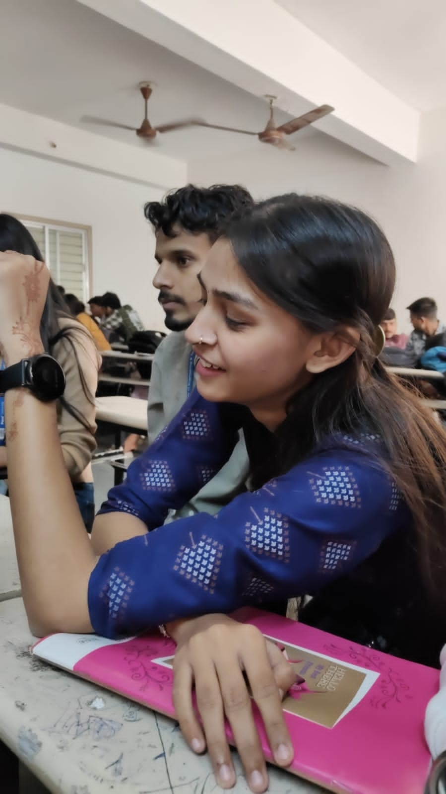

Letter
राजा जी, जब मैं पास नहीं होती और आप मुझे मिस करते हैं, तो जान लें कि मेरे विचार और दिल हमेशा आपके साथ हैं। यह दूरी केवल भौतिक है, लेकिन मुझे पता है कि यह समय कठिन हो सकता है, लेकिन मेरा स्नेह और समर्थन आपके साथ है। आपका साथ और आपकी खुशी मेरे लिए बहुत मायने रखते हैं। जब आप मुझसे दूर महसूस करें, तो बस याद रखिए कि हमारी साझा यादें औ हमेशा हमारे बीच में हैं। यह हमें एक-दूसरे के करीब महसूस कराता है, भले ही हम भौतिक रूप से दूर हों। हम जल्द ही मिलेंगे, और तब हम इन दूरियों को और भी खास बना सकेंगे। इस समय की कठिनाइयों को पार करने के लिए हमें एक-दूसरे की यादें और प्यार ही संबल देते हैं।
Quote
दूरी से प्यार कम नहीं होता, दिल के रिश्ते कभी टूटते नहीं।
Image
Songs
Tips
Call immidiately- 7016242037